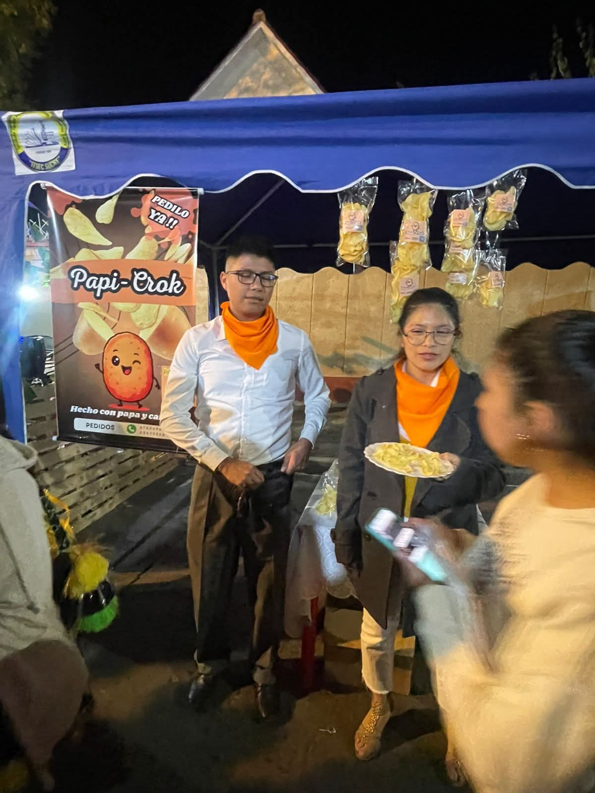
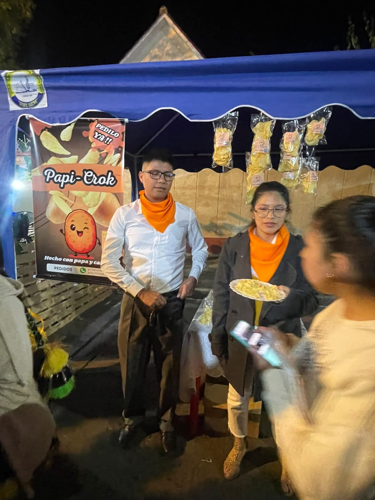
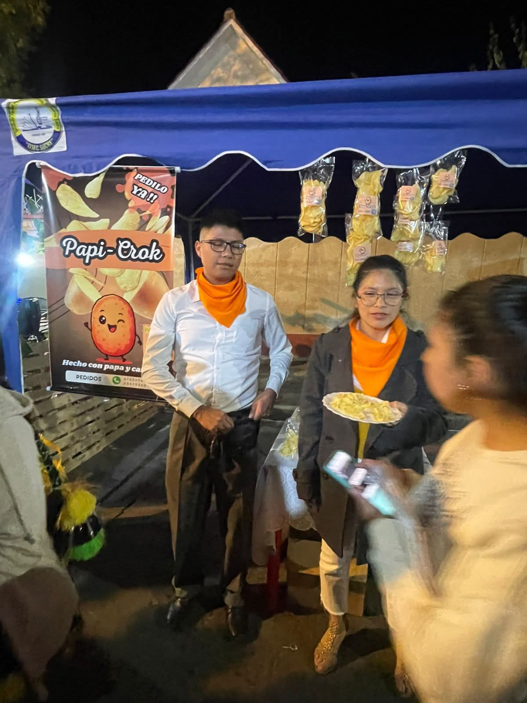
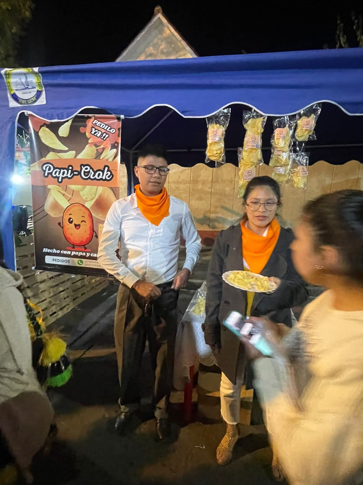

Las papas en bolsitas, o papas fritas, son un alimento popular que se disfruta en muchos lugares. Aunque a menudo se considera un "gusto culpable", las papas fritas también pueden ofrecer algunos beneficios nutricionales, especialmente cuando se consumen con moderación y como parte de una dieta equilibrada.